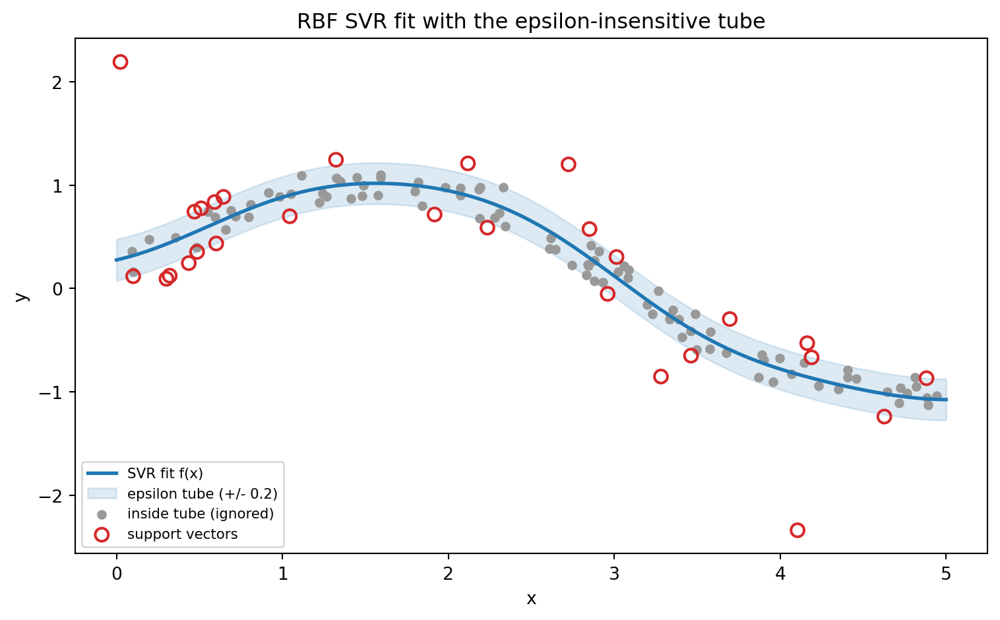
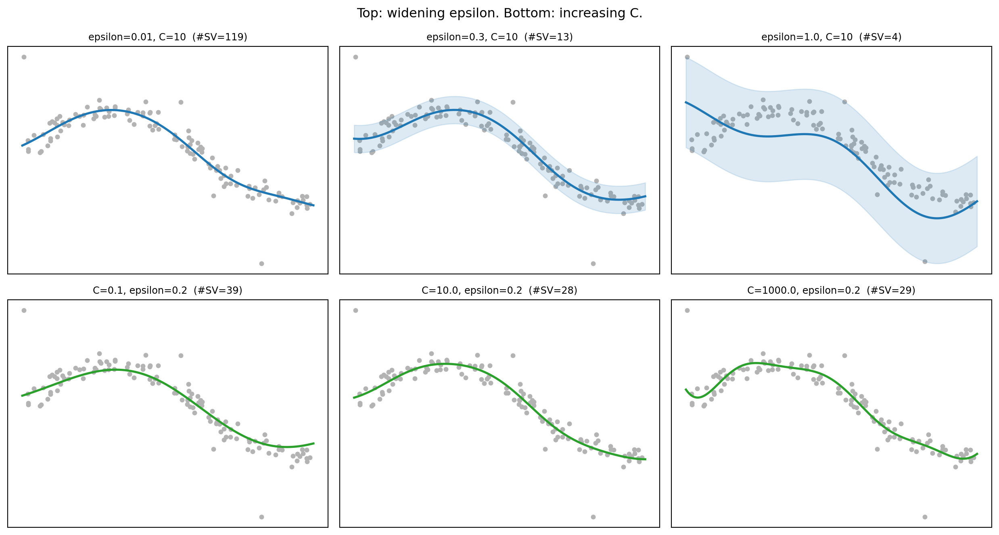

flowchart LR
A[Inputs x_i with targets y_i] --> B[Choose kernel k and tube width epsilon]
B --> C[Gram matrix K_ij = k of x_i and x_j]
C --> D[Solve dual QP for alpha and alpha star]
D --> E[Support vectors where alpha minus alpha star is nonzero]
E --> F[Recover bias b from unbounded support vectors]
F --> G[Predictor f of x equals weighted kernel sum plus b]
B -. implicit feature map phi .-> H[Feature space H]
H -. inner product .-> C
118 Support Vector Regression
Support vector machines are most often introduced as classifiers, but the same geometric and optimization machinery extends naturally to real valued prediction. Support Vector Regression (SVR) is the result. It keeps the two ideas that made the classifier attractive, namely a sparse representation built from a subset of training points and a kernel trick that buys nonlinearity without an explicit feature map, and it adds a third idea that is specific to regression: a tolerance band, or tube, inside which errors are simply ignored. This chapter develops SVR from the loss function up. We derive the primal and dual programs, interpret the tube geometrically, kernelize the predictor, and close with concrete guidance on choosing the two parameters that govern everything, \(\varepsilon\) and \(C\).
118.1 1. From Classification to Regression
118.1.1 1.1 The Regression Setup
We are given training data \(\{(\mathbf{x}_i, y_i)\}_{i=1}^{n}\) with inputs \(\mathbf{x}_i \in \mathbb{R}^d\) and real valued targets \(y_i \in \mathbb{R}\). We want a function \(f\) that predicts \(y\) from \(\mathbf{x}\). For the linear case we write
\[ f(\mathbf{x}) = \langle \mathbf{w}, \mathbf{x} \rangle + b, \]
with weight vector \(\mathbf{w} \in \mathbb{R}^d\) and bias \(b \in \mathbb{R}\). Ordinary least squares chooses \(\mathbf{w}\) and \(b\) to minimize the sum of squared residuals. SVR makes two departures from that recipe. First, it controls model complexity through the norm \(\|\mathbf{w}\|\), exactly as the classifier maximizes margin by minimizing \(\|\mathbf{w}\|\). Second, it replaces squared error with a loss that tolerates small deviations and penalizes large ones linearly.
118.1.2 1.2 Why a Different Loss
Squared error punishes every residual, however tiny, and grows quadratically, so a handful of large outliers can dominate the fit. SVR addresses both concerns. The flat region near zero means residuals within a chosen tolerance cost nothing, which produces sparse solutions and robustness to small noise. The linear growth far from zero means outliers exert bounded influence per unit residual rather than quadratic influence. The combination yields a model that depends on relatively few training points and resists distortion from a noisy minority.
118.2 2. The Epsilon-Insensitive Loss
118.2.1 2.1 Definition
The central object in SVR is the \(\varepsilon\)-insensitive loss, introduced by Vapnik. For a residual \(r = y - f(\mathbf{x})\) it is
\[ L_\varepsilon(r) = \max\{0, \, |r| - \varepsilon\}. \]
Read this directly. If the prediction lands within \(\varepsilon\) of the target, so \(|r| \le \varepsilon\), the loss is zero. Once the residual exceeds \(\varepsilon\) in absolute value, the loss equals the overshoot \(|r| - \varepsilon\) and grows linearly thereafter. The parameter \(\varepsilon \ge 0\) sets the half width of the no penalty zone.
L_eps(r)
| /
| /
| /
|_____/ no penalty region
| \
| \
+-----+----+----+---- r
-eps 0 +eps118.2.2 2.2 Relationship to Other Losses
The \(\varepsilon\)-insensitive loss is a flat bottomed cousin of the absolute loss. Setting \(\varepsilon = 0\) recovers \(L_0(r) = |r|\), so SVR with zero tolerance is closely related to least absolute deviations regression. As \(\varepsilon\) grows, more residuals fall into the free zone and the fit becomes less sensitive to the data near the prediction surface. The loss is convex and piecewise linear, which is what allows the whole problem to be cast as a quadratic program with a unique global optimum.
A useful intuition: squared loss assumes Gaussian noise, absolute loss assumes Laplacian noise, and the \(\varepsilon\)-insensitive loss assumes a noise model that is flat in a central band and Laplacian in the tails. The flat band is what makes the solution sparse.
118.3 3. The Primal Problem
118.3.1 3.1 Formulation with Slack Variables
We now turn the loss into an optimization problem. We want \(f\) to be flat, meaning \(\|\mathbf{w}\|^2\) small, while keeping most residuals inside the tube. Because residuals can be positive or negative, we introduce two sets of nonnegative slack variables, \(\xi_i\) for points above the tube and \(\xi_i^*\) for points below it. The primal program is
\[ \min_{\mathbf{w}, b, \boldsymbol{\xi}, \boldsymbol{\xi}^*} \quad \frac{1}{2}\|\mathbf{w}\|^2 + C \sum_{i=1}^{n} (\xi_i + \xi_i^*) \]
subject to
\[ \begin{aligned} y_i - \langle \mathbf{w}, \mathbf{x}_i \rangle - b &\le \varepsilon + \xi_i, \\ \langle \mathbf{w}, \mathbf{x}_i \rangle + b - y_i &\le \varepsilon + \xi_i^*, \\ \xi_i, \, \xi_i^* &\ge 0, \qquad i = 1, \dots, n. \end{aligned} \]
The first constraint handles a point that sits above the tube, where the target exceeds the prediction by more than \(\varepsilon\); the excess is absorbed by \(\xi_i\). The second handles a point below the tube, with the shortfall absorbed by \(\xi_i^*\). A point comfortably inside the tube satisfies both constraints with \(\xi_i = \xi_i^* = 0\) and contributes nothing to the penalty term.
118.3.2 3.2 Reading the Objective
The objective balances two competing goals. The term \(\frac{1}{2}\|\mathbf{w}\|^2\) is a complexity penalty, also called the regularization term, and pushes toward a flat, simple function. The term \(C \sum (\xi_i + \xi_i^*)\) is the empirical risk, the total amount by which points violate the tube. The constant \(C > 0\) is the price of those violations. Large \(C\) forces the model to respect the tube tightly even at the cost of a large \(\|\mathbf{w}\|\); small \(C\) tolerates violations in exchange for a flatter function. This is the standard regularization tradeoff, and it is exactly the structure of the soft margin classifier with the hinge loss swapped for the \(\varepsilon\)-insensitive loss.
118.3.3 3.3 Equivalent Unconstrained Form
It is worth noting that the constrained primal is equivalent to the unconstrained regularized risk
\[ \min_{\mathbf{w}, b} \quad \frac{1}{2}\|\mathbf{w}\|^2 + C \sum_{i=1}^{n} L_\varepsilon\big(y_i - \langle \mathbf{w}, \mathbf{x}_i \rangle - b\big). \]
The slack variables are just a device for turning the nondifferentiable \(\max\) into linear constraints that a quadratic program solver can handle. Both views describe the same minimizer.
118.4 4. The Dual Problem
118.4.1 4.1 Lagrangian and Dual Derivation
The primal has as many variables as features plus slacks, which is awkward when we want to kernelize. The dual fixes this. Introduce Lagrange multipliers \(\alpha_i, \alpha_i^* \ge 0\) for the two inequality constraints and \(\eta_i, \eta_i^* \ge 0\) for the slack nonnegativity constraints. The Lagrangian collects the objective and every constraint, each weighted by its multiplier,
\[ \begin{aligned} \mathcal{L} ={}& \tfrac{1}{2}\|\mathbf{w}\|^2 + C\sum_{i}(\xi_i + \xi_i^*) - \sum_{i}(\eta_i \xi_i + \eta_i^* \xi_i^*) \\ &- \sum_{i}\alpha_i\big(\varepsilon + \xi_i - y_i + \langle \mathbf{w}, \mathbf{x}_i\rangle + b\big) - \sum_{i}\alpha_i^*\big(\varepsilon + \xi_i^* + y_i - \langle \mathbf{w}, \mathbf{x}_i\rangle - b\big). \end{aligned} \]
At the saddle point \(\mathcal{L}\) is minimized over the primal variables and maximized over the multipliers. Setting the partial derivatives with respect to \(\mathbf{w}\), \(b\), \(\xi_i\), and \(\xi_i^*\) to zero gives the stationarity conditions
\[ \frac{\partial \mathcal{L}}{\partial \mathbf{w}} = \mathbf{w} - \sum_i (\alpha_i - \alpha_i^*)\mathbf{x}_i = 0, \qquad \frac{\partial \mathcal{L}}{\partial b} = \sum_i (\alpha_i^* - \alpha_i) = 0, \]
\[ \frac{\partial \mathcal{L}}{\partial \xi_i} = C - \alpha_i - \eta_i = 0, \qquad \frac{\partial \mathcal{L}}{\partial \xi_i^*} = C - \alpha_i^* - \eta_i^* = 0, \]
which rearrange into the compact set
\[ \mathbf{w} = \sum_{i=1}^{n} (\alpha_i - \alpha_i^*)\,\mathbf{x}_i, \qquad \sum_{i=1}^{n} (\alpha_i - \alpha_i^*) = 0, \qquad \alpha_i, \alpha_i^* \in [0, C]. \]
The box bound \(\alpha_i \le C\) follows directly from \(C - \alpha_i = \eta_i \ge 0\), and likewise for \(\alpha_i^*\). The first condition is the key one: the weight vector is a linear combination of the training inputs, with coefficients \(\beta_i = \alpha_i - \alpha_i^*\). Substituting \(\mathbf{w}\) back into \(\mathcal{L}\) cancels the primal and slack terms (the \(\xi\) coefficients \(C - \alpha_i - \eta_i\) vanish) and yields the dual quadratic program.
118.4.2 4.2 The Dual Program
\[ \max_{\boldsymbol{\alpha}, \boldsymbol{\alpha}^*} \quad - \frac{1}{2} \sum_{i,j} (\alpha_i - \alpha_i^*)(\alpha_j - \alpha_j^*)\langle \mathbf{x}_i, \mathbf{x}_j \rangle - \varepsilon \sum_{i} (\alpha_i + \alpha_i^*) + \sum_{i} y_i (\alpha_i - \alpha_i^*) \]
subject to
\[ \sum_{i=1}^{n} (\alpha_i - \alpha_i^*) = 0, \qquad \alpha_i, \alpha_i^* \in [0, C]. \]
This is a concave quadratic in \(2n\) variables with one equality constraint and box bounds. Crucially, the inputs enter only through inner products \(\langle \mathbf{x}_i, \mathbf{x}_j \rangle\), which is the door through which kernels will walk in Section 6.
118.4.3 4.3 The Predictor and Sparsity
Using \(\mathbf{w} = \sum_i (\alpha_i - \alpha_i^*)\mathbf{x}_i\), the prediction at a new point is
\[ f(\mathbf{x}) = \sum_{i=1}^{n} (\alpha_i - \alpha_i^*)\langle \mathbf{x}_i, \mathbf{x} \rangle + b. \]
Here is the payoff. The Karush Kuhn Tucker (KKT) complementary slackness conditions
\[ \alpha_i\big(\varepsilon + \xi_i - y_i + \langle \mathbf{w}, \mathbf{x}_i\rangle + b\big) = 0, \qquad (C - \alpha_i)\,\xi_i = 0, \]
and their starred counterparts, force \(\alpha_i = \alpha_i^* = 0\) for every point that lies strictly inside the tube, where the constraint is slack. Only points on the tube boundary or outside it carry nonzero coefficients. These are the support vectors. The model is therefore sparse: its prediction depends on a subset of the training data, often a small one. Note also that \(\alpha_i\) and \(\alpha_i^*\) are never both nonzero for the same point, since a residual cannot be above and below the tube at once, so the product \(\alpha_i \alpha_i^* = 0\).
The same conditions hand us the bias. For any unbounded support vector with \(\alpha_i \in (0, C)\) the slack \(\xi_i\) must vanish, so the first KKT line collapses to \(y_i - \langle \mathbf{w}, \mathbf{x}_i\rangle - b = \varepsilon\), giving
\[ b = y_i - \langle \mathbf{w}, \mathbf{x}_i\rangle - \varepsilon \quad (\alpha_i \in (0, C)), \qquad b = y_i - \langle \mathbf{w}, \mathbf{x}_i\rangle + \varepsilon \quad (\alpha_i^* \in (0, C)). \]
Averaging these estimates over all unbounded support vectors yields a numerically stable bias.
118.5 5. The Tube Concept
118.5.1 5.1 Geometric Picture
The geometry justifies the name. Around the regression function \(f(\mathbf{x})\) imagine a band of vertical half width \(\varepsilon\), the tube. Points whose targets fall inside the tube are predicted well enough and are ignored by the optimization. Points on the upper or lower wall of the tube, and points beyond the walls, are the support vectors that define \(\mathbf{w}\).
y
| . (outside, support vector)
| ____/____ upper wall (f + eps)
| . / f(x)
| /__________ lower wall (f - eps)
| . (inside the tube, ignored)
+-------------------- x118.5.2 5.2 Categories of Points
The KKT conditions partition the data into three groups. Points strictly inside the tube have \(\alpha_i = \alpha_i^* = 0\) and zero loss. Points exactly on a wall have a multiplier strictly between \(0\) and \(C\); these are the unbounded support vectors and they are the ones used to recover the bias \(b\). Points outside the tube have a multiplier pinned at \(C\) and a positive slack; these are the bounded support vectors. This structure also gives a clean way to compute \(b\): pick any unbounded support vector, where the residual equals exactly \(\pm\varepsilon\), and solve for \(b\), averaging over several such points for numerical stability.
118.5.3 5.3 Why the Tube Matters
The tube is the mechanism that produces both sparsity and a controllable bias toward simple functions. A wider tube swallows more points, leaves fewer support vectors, and yields a flatter, smoother predictor. A narrower tube tracks the data more closely and produces more support vectors. The width is set entirely by \(\varepsilon\), which is why \(\varepsilon\) is a genuine modeling decision and not merely a numerical knob.
118.6 6. Kernelized SVR
118.6.1 6.1 The Kernel Substitution
Both the dual objective and the predictor touch the inputs only through inner products. Replace each inner product \(\langle \mathbf{x}_i, \mathbf{x}_j \rangle\) with a kernel function \(k(\mathbf{x}_i, \mathbf{x}_j) = \langle \phi(\mathbf{x}_i), \phi(\mathbf{x}_j) \rangle\), where \(\phi\) maps inputs into a possibly very high dimensional feature space. By Mercer’s theorem any symmetric positive semidefinite kernel corresponds to such a feature map, so we never need to construct \(\phi\) explicitly. The kernelized predictor is
\[ f(\mathbf{x}) = \sum_{i=1}^{n} (\alpha_i - \alpha_i^*)\, k(\mathbf{x}_i, \mathbf{x}) + b. \]
We have obtained a nonlinear regressor while solving the same convex quadratic program, now with the kernel matrix \(K_{ij} = k(\mathbf{x}_i, \mathbf{x}_j)\) in place of the inner product matrix. The whole pipeline reads as a single flow from inputs to predictor.
118.6.2 6.2 Common Kernels
The standard choices mirror those used in classification.
\[ \begin{aligned} \text{Linear:} \quad & k(\mathbf{x}, \mathbf{x}') = \langle \mathbf{x}, \mathbf{x}' \rangle, \\ \text{Polynomial:} \quad & k(\mathbf{x}, \mathbf{x}') = (\gamma \langle \mathbf{x}, \mathbf{x}' \rangle + c)^{p}, \\ \text{RBF (Gaussian):} \quad & k(\mathbf{x}, \mathbf{x}') = \exp\!\big(-\gamma \|\mathbf{x} - \mathbf{x}'\|^2\big). \end{aligned} \]
The radial basis function (RBF) kernel is the default workhorse. Its single bandwidth parameter \(\gamma\) controls how local the influence of each support vector is. Large \(\gamma\) makes each point influential only over a small neighborhood, which can overfit; small \(\gamma\) spreads influence widely and tends toward a smooth, almost linear fit.
118.6.3 6.3 A Sketch of the Workflow
In practice the full pipeline with a library such as scikit-learn is short.
from sklearn.svm import SVR
from sklearn.pipeline import make_pipeline
from sklearn.preprocessing import StandardScaler
# Scaling matters because the RBF kernel and C are scale sensitive.
model = make_pipeline(
StandardScaler(),
SVR(kernel="rbf", C=10.0, epsilon=0.1, gamma="scale"),
)
model.fit(X_train, y_train)
preds = model.predict(X_test)Standardizing features is not optional. The RBF kernel measures distances, and \(C\) trades off against a residual scale, so both behave erratically when features live on wildly different scales.
118.7 7. Tuning Epsilon and C
118.7.1 7.1 What Each Parameter Controls
The two parameters play distinct roles and should be reasoned about separately before being tuned jointly.
\(\varepsilon\) sets the width of the insensitive tube. It governs how precisely the model tries to fit the training targets and, through that, the number of support vectors. A larger \(\varepsilon\) ignores more residuals, yields fewer support vectors, and produces a flatter function. A reasonable starting point ties \(\varepsilon\) to the noise level of the target: if you believe the irreducible noise in \(y\) has standard deviation \(\sigma\), choosing \(\varepsilon\) on the order of \(\sigma\) avoids fitting noise. Setting \(\varepsilon\) far below the noise floor wastes effort modeling randomness and inflates the support vector count.
\(C\) sets the penalty for points outside the tube and therefore the regularization strength. Large \(C\) pushes toward low training error and a more complex function; small \(C\) favors flatness and tolerates violations. A common heuristic ties \(C\) to the range of the targets, for instance \(C \approx \max(|\bar{y} + 3\sigma_y|, |\bar{y} - 3\sigma_y|)\), which keeps the penalty commensurate with the target scale.
118.7.2 7.2 Interaction and Failure Modes
The parameters interact. If \(\varepsilon\) is large, most points fall inside the tube and \(C\) has little to push against, so the model is insensitive to \(C\). If \(\varepsilon\) is near zero, almost every point is a support vector and the fit reduces to a regularized absolute loss regression governed mostly by \(C\). The classic failure modes are easy to spot. A model with too small \(\varepsilon\) and large \(C\) overfits and has an enormous support vector count. A model with too large \(\varepsilon\) underfits and produces a nearly flat line. Watching the fraction of training points that become support vectors is a useful diagnostic: a healthy RBF SVR often uses a modest fraction, and a fraction approaching one signals overfitting or a tube that is too narrow.
118.7.3 7.3 A Practical Tuning Recipe
A disciplined search proceeds on a logarithmic grid with cross validation.
from sklearn.model_selection import GridSearchCV
param_grid = {
"svr__C": [0.1, 1, 10, 100, 1000],
"svr__epsilon": [0.01, 0.1, 0.5, 1.0],
"svr__gamma": [0.001, 0.01, 0.1, "scale"],
}
search = GridSearchCV(model, param_grid, cv=5,
scoring="neg_mean_absolute_error")
search.fit(X_train, y_train)Three habits make this reliable. First, scale the features inside the cross validation pipeline so that no information leaks from validation folds. Second, search \(C\) and \(\gamma\) on a coarse logarithmic grid first, then refine around the best region. Third, treat \(\varepsilon\) as the slowest moving knob: fix it from a noise estimate, tune \(C\) and \(\gamma\), and only revisit \(\varepsilon\) if the support vector fraction or validation error suggests the tube is mis-sized.
118.7.4 7.4 The nu-SVR Alternative
A practical difficulty with \(\varepsilon\) is that its right value depends on the unknown noise scale. The \(\nu\)-SVR reformulation replaces \(\varepsilon\) with a parameter \(\nu \in (0, 1]\) that the optimizer treats as a target. The value \(\nu\) is simultaneously an upper bound on the fraction of points allowed to fall outside the tube and a lower bound on the fraction of support vectors. This makes the knob more interpretable, since \(\nu\) has a direct meaning in terms of data fractions, and \(\varepsilon\) becomes an output of the optimization rather than a guess supplied in advance. When you have no good noise estimate, \(\nu\)-SVR is often the easier model to tune.
118.8 8. Implementation in Practice
The following implementations fit an RBF SVR to a noisy nonlinear target, draw the \(\varepsilon\) tube with its support vectors marked, sweep \(\varepsilon\) and \(C\) to expose the sparsity tradeoff, tabulate error against the support vector fraction, and symbolically confirm that the two slack variables reproduce the \(\varepsilon\)-insensitive loss.
Code
import numpy as np
import pandas as pd
import matplotlib.pyplot as plt
import sympy as sp
from sklearn.svm import SVR
from sklearn.preprocessing import StandardScaler
from sklearn.pipeline import make_pipeline
from sklearn.metrics import mean_absolute_error, mean_squared_error
np.random.seed(0)
# Noisy nonlinear target: a sine with noise plus a few outliers
n = 120
X = np.sort(5.0 * np.random.rand(n, 1), axis=0)
y_true = np.sin(X).ravel()
noise = 0.15 * np.random.randn(n)
y = y_true + noise
y[::20] += 1.5 * (np.random.rand(len(y[::20])) - 0.5) * 3.0 # sprinkle outliers
# A dense grid for plotting smooth fitted curves
Xg = np.linspace(0.0, 5.0, 400).reshape(-1, 1)
def fit_svr(C, epsilon, gamma="scale"):
model = make_pipeline(
StandardScaler(),
SVR(kernel="rbf", C=C, epsilon=epsilon, gamma=gamma),
)
model.fit(X, y)
return model
# Figure 1: SVR fit with the epsilon tube and support vectors marked
eps = 0.2
model = fit_svr(C=10.0, epsilon=eps)
yg = model.predict(Xg)
svr = model.named_steps["svr"]
sv_mask = np.zeros(n, dtype=bool)
sv_mask[svr.support_] = True
fig1, ax1 = plt.subplots(figsize=(8, 5))
ax1.plot(Xg, yg, color="C0", lw=2, label="SVR fit f(x)")
ax1.fill_between(Xg.ravel(), yg - eps, yg + eps, color="C0", alpha=0.15,
label=f"epsilon tube (+/- {eps})")
ax1.scatter(X[~sv_mask], y[~sv_mask], c="0.6", s=20,
label="inside tube (ignored)")
ax1.scatter(X[sv_mask], y[sv_mask], facecolors="none", edgecolors="C3",
s=55, lw=1.5, label="support vectors")
ax1.set_xlabel("x"); ax1.set_ylabel("y")
ax1.set_title("RBF SVR fit with the epsilon-insensitive tube")
ax1.legend(loc="lower left", fontsize=8)
fig1.tight_layout()
plt.show()
print(f"Support vectors: {sv_mask.sum()} of {n} "
f"({100 * sv_mask.sum() / n:.1f}%)")
# Figure 2: effect of epsilon (top) and C (bottom)
fig2, axes = plt.subplots(2, 3, figsize=(13, 7))
for j, e in enumerate([0.01, 0.3, 1.0]):
m = fit_svr(C=10.0, epsilon=e)
s = m.named_steps["svr"]
axes[0, j].scatter(X, y, c="0.7", s=12)
axes[0, j].plot(Xg, m.predict(Xg), color="C0", lw=2)
axes[0, j].fill_between(Xg.ravel(), m.predict(Xg) - e, m.predict(Xg) + e,
color="C0", alpha=0.15)
axes[0, j].set_title(f"epsilon={e}, C=10 (#SV={len(s.support_)})",
fontsize=9)
axes[0, j].set_xticks([]); axes[0, j].set_yticks([])
for j, Cval in enumerate([0.1, 10.0, 1000.0]):
m = fit_svr(C=Cval, epsilon=0.2)
s = m.named_steps["svr"]
axes[1, j].scatter(X, y, c="0.7", s=12)
axes[1, j].plot(Xg, m.predict(Xg), color="C2", lw=2)
axes[1, j].set_title(f"C={Cval}, epsilon=0.2 (#SV={len(s.support_)})",
fontsize=9)
axes[1, j].set_xticks([]); axes[1, j].set_yticks([])
fig2.suptitle("Top: widening epsilon. Bottom: increasing C.")
fig2.tight_layout()
plt.show()
# Results table: how C and epsilon move error and sparsity
rows = []
for C in [0.1, 10.0, 1000.0]:
for e in [0.01, 0.2, 1.0]:
m = fit_svr(C=C, epsilon=e)
pred = m.predict(X)
n_sv = len(m.named_steps["svr"].support_)
rows.append({
"C": C, "epsilon": e,
"MAE": round(mean_absolute_error(y, pred), 4),
"RMSE": round(np.sqrt(mean_squared_error(y, pred)), 4),
"n_SV": n_sv,
"SV_frac": round(n_sv / n, 3),
})
results = pd.DataFrame(rows)
print("\nSVR error and sparsity versus C and epsilon:")
print(results.to_string(index=False))
# Printed numbers: the predictor as a kernel expansion over support vectors
beta = svr.dual_coef_.ravel() # the (alpha_i - alpha_i*) coefficients
print(f"\nFitted bias b = {svr.intercept_[0]:.4f}")
print(f"Sum of dual coefficients = {beta.sum():.6e} (KKT: should be ~0)")
print(f"max |alpha - alpha*| = {np.abs(beta).max():.4f} (bounded by C=10)")
# SymPy check: the two slacks reproduce the epsilon-insensitive loss.
# xi + xi* = max(0, r - eps) + max(0, -r - eps) = max(0, |r| - eps).
r = sp.symbols("r", real=True)
e_pos = sp.symbols("epsilon", positive=True)
loss = sp.Max(0, sp.Abs(r) - e_pos)
slack_sum = sp.Max(0, r - e_pos) + sp.Max(0, -r - e_pos)
checks = [float((loss - slack_sum).subs({r: rv, e_pos: 0.2}))
for rv in [-1.0, -0.1, 0.0, 0.1, 1.0]]
print("\nSymPy check, L_eps(r) - (xi + xi*) over sample residuals =", checks)
Support vectors: 28 of 120 (23.3%)
SVR error and sparsity versus C and epsilon:
C epsilon MAE RMSE n_SV SV_frac
0.1 0.01 0.1652 0.2893 115 0.958
0.1 0.20 0.1833 0.3021 39 0.325
0.1 1.00 0.5402 0.6432 6 0.050
10.0 0.01 0.1559 0.2857 119 0.992
10.0 0.20 0.1593 0.2807 28 0.233
10.0 1.00 0.3807 0.4535 4 0.033
1000.0 0.01 0.1534 0.2791 116 0.967
1000.0 0.20 0.1614 0.2751 29 0.242
1000.0 1.00 0.4105 0.4848 4 0.033
Fitted bias b = 0.0151
Sum of dual coefficients = 5.773160e-15 (KKT: should be ~0)
max |alpha - alpha*| = 10.0000 (bounded by C=10)
SymPy check, L_eps(r) - (xi + xi*) over sample residuals = [0.0, 0.0, 0.0, 0.0, 0.0]using LIBSVM, Statistics, Random
Random.seed!(0)
# Noisy sine target
n = 120
X = sort(5.0 .* rand(n))
y = sin.(X) .+ 0.15 .* randn(n)
# epsilon-SVR with an RBF kernel; standardize the single feature
mu, sd = mean(X), std(X)
Xs = reshape((X .- mu) ./ sd, 1, n) # LIBSVM expects features in rows
model = svmtrain(Xs, y; svmtype=EpsilonSVR,
kernel=Kernel.RadialBasis, cost=10.0, epsilon=0.2)
pred, _ = svmpredict(model, Xs)
mae = mean(abs.(pred .- y))
println("epsilon-SVR #SV = ", model.nSV, " MAE = ", round(mae, digits=4))// Cargo.toml: linfa = "0.7", linfa-svm = "0.7", ndarray = "0.15",
// ndarray-rand = "0.14"
use linfa::prelude::*;
use linfa_svm::Svm;
use ndarray::{Array1, Array2};
fn main() {
// Noisy sine target on a regular grid
let n = 120usize;
let xs: Vec<f64> = (0..n).map(|i| 5.0 * (i as f64) / (n as f64)).collect();
let feats: Vec<f64> = xs.clone();
let targets: Vec<f64> = xs.iter().map(|x| x.sin()).collect();
let x = Array2::from_shape_vec((n, 1), feats).unwrap();
let y = Array1::from(targets);
let ds = Dataset::new(x, y);
// epsilon-SVR with a Gaussian (RBF) kernel; eps here is the tube width
let model = Svm::<_, f64>::params()
.gaussian_kernel(1.0)
.eps(0.2)
.c_svc(10.0, 10.0) // penalty C for the epsilon-insensitive loss
.fit(&ds)
.expect("fit failed");
let preds = model.predict(&ds);
let mae: f64 = preds
.iter()
.zip(ds.targets().iter())
.map(|(p, t)| (p - t).abs())
.sum::<f64>()
/ (n as f64);
println!("RBF SVR training MAE = {:.4}", mae);
}118.9 9. Summary
Support Vector Regression transplants the margin idea from classification into the regression setting by way of the \(\varepsilon\)-insensitive loss. The primal balances a flatness penalty \(\frac{1}{2}\|\mathbf{w}\|^2\) against tube violations weighted by \(C\). The dual expresses the solution purely through inner products, which makes the predictor sparse in support vectors and immediately kernelizable for nonlinear fits. The tube of half width \(\varepsilon\) is the geometric heart of the method: it decides which points matter and how smooth the result will be. Tuning comes down to two parameters with clear meanings, \(\varepsilon\) for tube width and noise tolerance and \(C\) for regularization strength, with the RBF bandwidth \(\gamma\) as a third lever when a nonlinear kernel is used. Reason about each from the scale of the data, search the rest on a logarithmic grid with cross validation, and watch the support vector fraction as a guard against overfitting.
118.10 References
- Vapnik, V. The Nature of Statistical Learning Theory. Springer, 1995. DOI: 10.1007/978-1-4757-3264-1
- Smola, A. J. and Scholkopf, B. “A Tutorial on Support Vector Regression.” Statistics and Computing, 14(3), 2004. DOI: 10.1023/B:STCO.0000035301.49549.88
- Drucker, H., Burges, C. J. C., Kaufman, L., Smola, A., and Vapnik, V. “Support Vector Regression Machines.” Advances in Neural Information Processing Systems 9, 1997. https://papers.nips.cc/paper/1238-support-vector-regression-machines
- Scholkopf, B., Smola, A. J., Williamson, R. C., and Bartlett, P. L. “New Support Vector Algorithms.” Neural Computation, 12(5), 2000. DOI: 10.1162/089976600300015565
- Chang, C.-C. and Lin, C.-J. “LIBSVM: A Library for Support Vector Machines.” ACM Transactions on Intelligent Systems and Technology, 2(3), 2011. DOI: 10.1145/1961189.1961199
- Pedregosa, F. et al. “Scikit-learn: Machine Learning in Python.” Journal of Machine Learning Research, 12, 2011. https://jmlr.org/papers/v12/pedregosa11a.html
- scikit-learn developers. “Support Vector Regression.” scikit-learn User Guide. https://scikit-learn.org/stable/modules/svm.html#regression
- Cherkassky, V. and Ma, Y. “Practical Selection of SVM Parameters and Noise Estimation for SVM Regression.” Neural Networks, 17(1), 2004. DOI: 10.1016/S0893-6080(03)00169-2